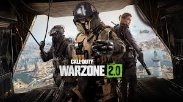
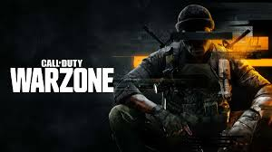

Call of Duty: Warzone es un juego de batalla real y shooter en línea, desarrollado por Infinity Ward y publicado por Activision. Lanzado en marzo de 2020, Warzone se convirtió rápidamente en uno de los títulos más populares del género de batalla real, gracias a su accesibilidad, jugabilidad dinámica y la ya reconocida franquicia de Call of Duty.
¿De qué trata Call of Duty: Warzone?
Call of Duty: Warzone se desarrolla en el mismo universo que Call of Duty: Modern Warfare, aunque presenta una historia independiente centrada en los combates en una vasta zona de guerra llamada Verdansk (luego sustituida por otros mapas, dependiendo de la temporada). El juego permite que hasta 150 jugadores (o más, dependiendo de las actualizaciones) se enfrenten entre sí en un mapa abierto, con el objetivo de ser el último jugador o equipo en pie.
En Warzone, los jugadores son lanzados desde un avión a la zona de combate y deben recolectar armas, equipo y recursos mientras se enfrentan a otros jugadores. Con el paso del tiempo, un círculo se va reduciendo gradualmente, forzando a los jugadores a acercarse y generar enfrentamientos, lo que mantiene el ritmo del juego rápido y emocionante.
 